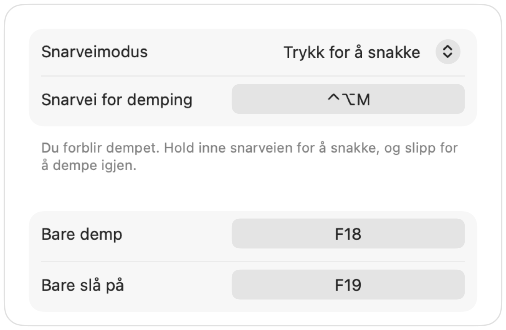

Push to talk på Mac, i alle apper
Push to talk holder deg dempet til du holder inne en tast. Det er den enkleste måten å være stille på i store møter eller støyende rom. Likevel har bare noen få apper denne funksjonen, og hver app bruker en ulik tast.
Muffle gir deg trykk for å snakke i alle apper på Mac-en din. Velg Trykk for å snakke i Innstillinger, hold inne snarveien for å snakke, og slipp for å dempe igjen.
Bruk push to talk
- 1
Installer Muffle.
- 2
I Muffle-innstillinger setter du Snarveimodus til «Trykk for å snakke».
- 3
Hold inne Control-Tilvalg-M mens du snakker.
- 4
Slipp tasten. Du er dempet igjen.

- Foretrekker du en enkelttast? Angi en snakketast i Innstillinger: Høyre ⌥, fn eller en ekstra museknapp.
- Velg en behagelig snarvei i Muffle-innstillinger, for eksempel en F-tast.
Spørsmål og svar
Fungerer push to talk i Google Meet?
Ja. Muffle demper selve mikrofonen, så push to talk fungerer i Google Meet, Zoom, Teams, Discord og alle andre apper.
Finnes det push to mute?
Ja. Velg «Trykk for å dempe» og hold inne snarveien for å dempe et øyeblikk, som en hosteknapp.